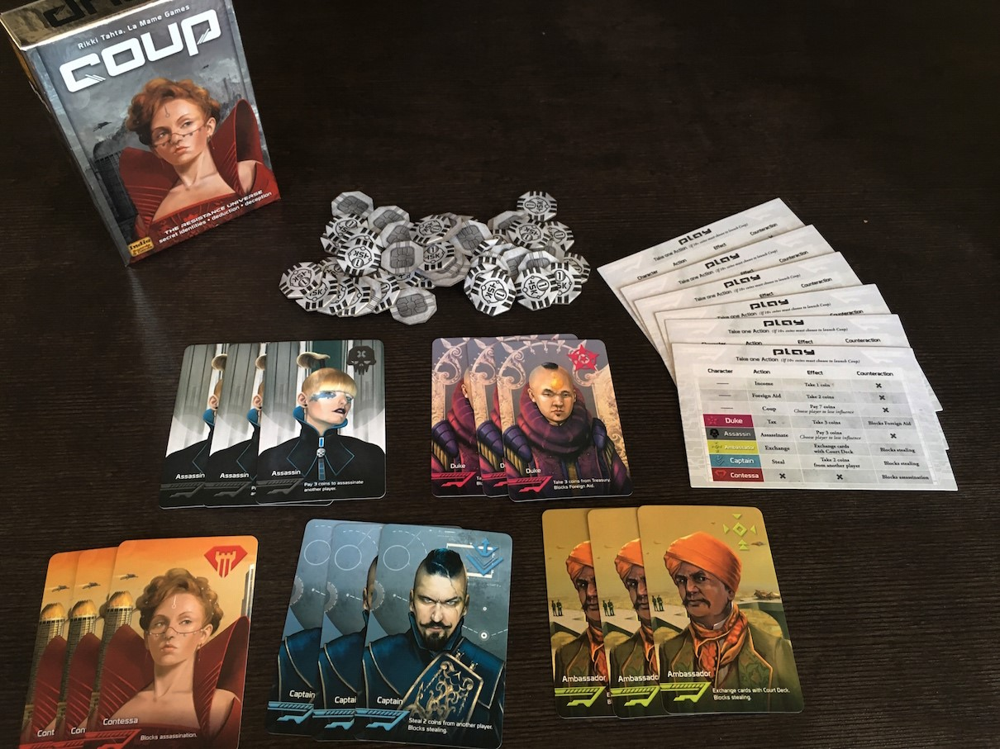

Electrical engineer extraordinaire, graduate
of SJSU electrical engineering department and starting at Google soon!*
*Starting with Tezeract as a contractor at Google
aspiring to
become a professional engineer, and looking
forward to getting a masters!
Ready to be an engineer!
some of my work experince...
Western Digitial; Test engineer; July, 2020 - Feburary, 2022
Worked on the latest silicon that Western digital produced. Used skills in coding to work with testing equipment made by the company in C and
helped automate many of the processes including the set up procedures using Python. Some of the projects I worked on included making a GUI to
automate the running of scripts on a tester and another GUI to automatically set up a coding enviornment and firmware.
Worked with a company to build hardware for virtual reality accessories. This included using CAD, such as Fusion360, to build object for manufacturing
and objects to be 3D printed. This included working with individual pieces and then putting them into an assembly. Along with mechanical design
I also built electronics such as a pressure pad to detect a person's pressure on a flexible PCB. This included designing a foot shaped PCB, size 10
men's, and a control board to control all the electronics. Finally I write some code to include RTOS in the company code so that everything
runs well.
Worked on a GUI with python to make documentation of specific logic gates easier and more automated. This included using some machine learning
to parse for information and write them to a word document. This was done by taking a .lib file and a .v file and comparing their inputs and
outputs to their names to see if the pins matched up. Finally the .lib file was run through an ML machine that would parse the information and
put the technical specs, a picture of the logic gate, and an autogenerated truth table. This was meant to be written for each component of upcoming
logic gates and sent to customers quickly, as well as do a quality check on all logic gates.
About me:
Fun day at Santa Cruz
I enjoy things such as going to the comedy club while in my time during SJSU.
I enjoyed making my own jokes and telling them week after week to spark creativity
and practice my public speaking skills. Outside of school I enjoyed my time biking around the
trails in San Jose including the Guadalupe river trail, the Los Gatos Creek trail,
and the Coyote Creek trail. Other than those I enjoy creating dishes and tinkering
with electronics and coding in my spare time. Also a former Boy Scout that ended in
honors with the Eagle Scout award.
Some of my hobbies include biking, coding, and board games! Some of my favorite board games include:
Concordia
Secret Hitler
Coup

Projects
Robotic leg
Individual robotic leg project where I designed a leg like structure and used a
microcontroller to move the leg up and down with a linear actuator. This used CREO parametrics
to design the leg and a 3D printer to build the parts in PLA and rubber. Looking to do more
with it and include servo motors to move the leg when I get more funds. Hover over the picture to view the gif.
Microwave engineering final
Duo project where I designed and built a radar dish, while my partner did
the simulations for the project in HFSS. Along with this I designed a system that
would take sample points every 1 degree and then put the average of 5 samples into
an excel file. This used a Python script to collect data and an Arduino using RTOS
to take accurate and communicate via serial communications. Hover over the picture to view the gif. SDR.
Cmpe243 final project app
Group project where my part was to build an app to connect a microcontroller to an app
by using a bluetooth module. This project was particularly difficult because the app was built
with react and coded with JS and python with flask. On top of that the bluetooth module was from
an arduino kit and the microcontroller was designed by the professor so I had to synchronize them
to make sure the computer was actually getting data from it.
This project was particularly rewarding because it helped me learn about Javascript from the internet
and the react framework. This also introduced me to flask as a backend and how to connect devices Made
from Arduinos to work with other components.
In the end, this project taught me how to make an app for the web that would include google-maps, connect to a
bluetooth device, and update the website with flask to output data for people to read.
Robotics
Meetings with interdisciplinary engineers, my part
included designing and populating PCBs for the drive system in DipTrace
including designing a schematic and then putting it all together on a PCB
.This included using MOSFET switching to convert 3V3 to 5V using an
ESP 32 WROOM.
Mechatronics
Using an Arduino UNO to build an RFID doggie door using Master Slave
communication protocol to open a door using a motor. My part was to do
some minor coding as well as make the electrical connections from
microcontroller to other components.
>
Self designed Pipboy 3000
Self designed Pipboy 3000 in Creo Parametrics to hold a Nokia touch screen phone
during my first winter break at SJSU. See my GrabCad for more.
Globalfoundries GUI
Project done at my internship which included doing some machine learning to pick up
variables in a .lib file and then develop a truth table automatically for any standard cell
that was picked up. This was to make a datasheet automatically and build it quickly, but also
the GUI would check the consistancy of cells between Verilog files and lef files or Verilog
and library files. This was to give a quality assurance and increase the integrity of the
company's products.
Project Script Automation Like A Machine (SALAM)
Script automation for running scripts by emulating clicking and mouse movement in Python
to get a machine to run directory of scripts. It would run multiple scripts in one sitting and then report the outcome
onto a CSV for users to see pass/fail.
Remote Oscilloscope project
Used VISA communications to send commands to an oscilloscope to take measurements. The code
was wrapped in a Python GUI using TKinter so the user could just point, click, and press to run the machine. This
would then run, and collect data and plot them on Matplotlib for easy analysis. This was also made remote through
remote computers so that tests could be taken away from the machine.
Senior design project
Meeting with a group of other electrical engineers to build a
project to locate an unknown RF transmitter, specifically for drones
operating at 2.4 GHz. I did some debugging and figuring out how some of the
firmware worked as well as build some PCBs and design some case for protection
of outer elements.
My website
Self made website using HTML that I decided to do during my free time after I graduated
since I was curious about learning the HTML language and some web development as well as to
showcase my skills and projects during my time in SJSU.
Verilog final
A group of design engineers making hardware using RTL CAD software in Vivado
and then using an eclipse based SDK to control the hardware to play a song called Daisy
Bell.
Embedded systems final
Meeting with a group of other embedded systems engineers to design a
system that would rev up a motor to 1500 RPM controlled with a keypad using FreeRTOS,
PID systems,interrupts hiearchy, and timmer counters; all done on a SAMD20 through
ATMEL studios.
CRM project
Duo project with a friend from college including working with React, CSS, JavaScript
and Python to make a functioning management app. My part includes working on webscraping
applications to find suitable candidates using Selenium and BeautifulSoup to look for groups.
This included weekly meetings remotely and some gatherings to work on the project in person.